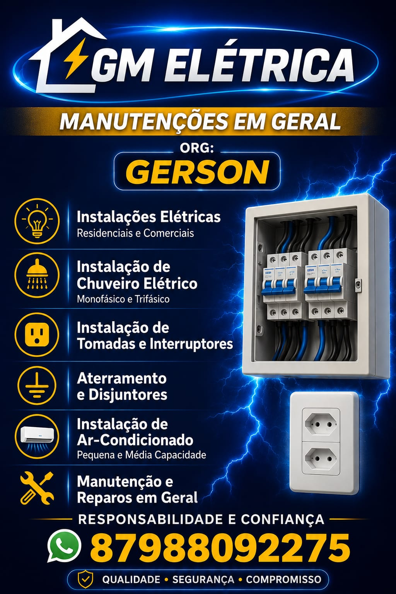

💡 Instalações elétricas
Em residências e comércios.
Petrolina e região
GM Elétrica — org. Gerson. Instalações elétricas residenciais e comerciais, chuveiro elétrico, tomadas, aterramento, disjuntores, ar-condicionado e manutenções em geral.
Falar no WhatsApp: 87 98809-2275Orçamento combinado direto com o responsável, pelo WhatsApp.

Em residências e comércios.
Instalação monofásica e trifásica.
Instalação de tomadas e interruptores.
Aterramento e instalação de disjuntores.
Instalação de pequena e média capacidade.
Manutenções em geral.
Chama no WhatsApp 87 98809-2275 e descreve o serviço.
Escopo e valor combinados na conversa.
Gerson executa o combinado.
Responsabilidade e confiança.
Qualidade · Segurança · Compromisso — os três valores que fecham cada serviço da GM Elétrica.
Atendimento em Petrolina e região, para residências e comércios. Para áreas vizinhas, consulte pelo WhatsApp.
Sim — monofásico e trifásico, conforme o flyer oficial da GM Elétrica.
Os dois: instalações elétricas residenciais e comerciais.
Sim, de pequena e média capacidade.
Pelo WhatsApp 87 98809-2275, direto com o Gerson.
Fale direto com o Gerson, responsável pela GM Elétrica.
Chamar no WhatsApp: 87 98809-2275